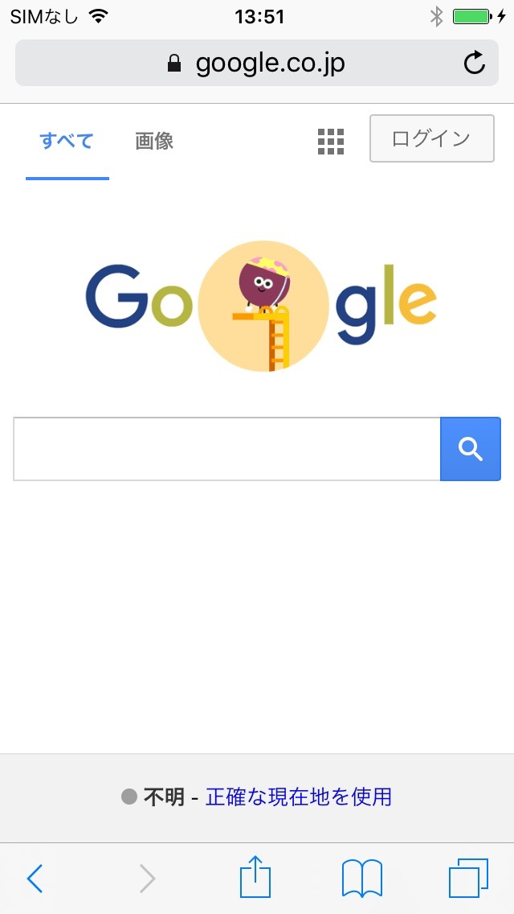

Safariで開いているページをdConnectBrowser用のブックマークとして保存することができます。
まず、Safariなどについているアクションボタンを押してください。
Safariで開いているページをdConnectBrowser用のブックマークとして保存することができます。
まず、Safariなどについているアクションボタンを押してください。
その中に「dConnectBrowserに保存」という項目があるので、それをタップしてください。
現在開いているページの情報を取得する画面が開きます。
その時、保存するフォルダの場所などを選択してください。
Saveをタップすることでブックマークを保存します。
そのあとで、上記ダイアログが表示されます。
開くをタップすると現在のページをdConnectBrowserで開くことができます。